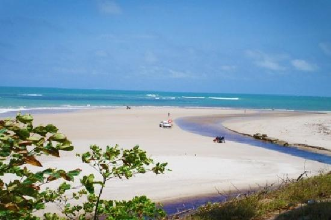
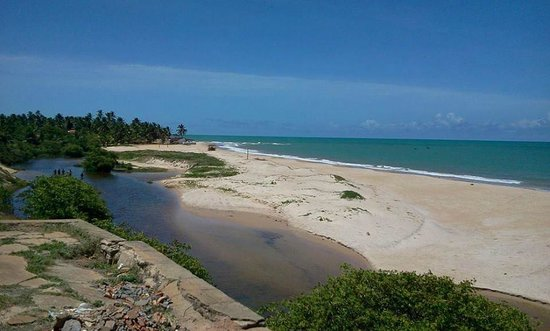
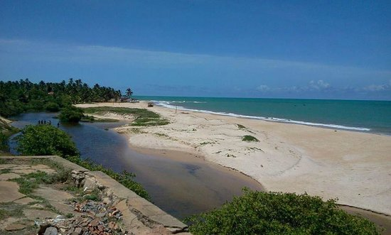

A PRAIA
Na encantadora costa sul de Alagoas, emoldurada por coqueiros, falésias coloridas e um mar que varia entre o verde-esmeralda e o azul-celeste, repousa a Praia Lagoa do Pau — um dos destinos mais charmosos e cheios de identidade do município de Coruripe. Com um nome curioso e uma beleza que impressiona logo à primeira vista, Lagoa do Pau reúne natureza, cultura e tradição em um só lugar. O nome, repleto de história, remonta ao tempo da colonização portuguesa. Diz-se que uma grande lagoa próxima à praia abrigava uma enorme árvore caída, que servia de ponto de referência para os antigos navegadores e moradores da região. Assim, surgiu o nome Lagoa do Pau — simples, direto e carregado de memória. Hoje, o que se vê ali é uma das praias mais completas da região. A paisagem é um equilíbrio perfeito entre rusticidade e acessibilidade. As águas são calmas e mornas, protegidas por recifes naturais, ideais para o banho e para atividades como stand-up paddle, caiaque e mergulho com snorkel. Na maré baixa, formam-se piscinas naturais que encantam adultos e crianças, convidando a momentos de pura descontração. A faixa de areia é extensa, dourada e limpa, margeada por fileiras de coqueiros que balançam ao vento, fornecendo sombra e um clima de paraíso tropical. Mais ao sul, falésias em tons terrosos oferecem um espetáculo à parte, especialmente durante o entardecer, quando ganham cores douradas sob a luz suave do sol poente. A Praia Lagoa do Pau é uma das mais conhecidas de Coruripe, mas ainda guarda a atmosfera pacata de vila de pescadores. Não é difícil encontrar moradores jogando conversa fora na beira da praia, crianças correndo descalças e redes estendidas em varandas simples. A receptividade do povo local é um atrativo à parte — sorriso no rosto, histórias para contar e uma alegria que contagia. A economia da região gira em torno da pesca artesanal, da agricultura e, nos últimos anos, do turismo. As jangadas e barcos pequenos saem ao amanhecer em busca de peixe, polvo, camarão e mariscos que abastecem a culinária local, sempre fresca e saborosa. Comer um peixe na brasa ou uma moqueca à beira-mar, com o pé na areia e o som das ondas ao fundo, é uma experiência que fica gravada na memória de quem visita o lugar. Os bares e restaurantes simples da região oferecem delícias típicas da cozinha alagoana, como arroz de sururu, caldeirada de frutos do mar, camarão ao alho e óleo e a tradicional peixada com pirão e farofa. Tudo com aquele toque caseiro e o tempero característico do nordeste: coentro fresco, leite de coco e muito carinho no preparo. Além da beleza natural, Lagoa do Pau também possui um lado cultural forte. A comunidade é ativa em festas populares, celebrações religiosas e manifestações folclóricas. A festa de São Sebastião, por exemplo, é uma das mais tradicionais da localidade, com procissões, música ao vivo e comidas típicas que reúnem moradores e visitantes em clima de fé e confraternização. O artesanato local também merece destaque. Assim como em outras praias da região, é possível encontrar trabalhos em palha, cerâmica e, principalmente, rendas feitas à mão por artesãs talentosas que mantêm viva a tradição do filé alagoano. É comum ver essas peças sendo produzidas nas calçadas das casas ou nas feiras organizadas pelas associações de moradores. Para os amantes da natureza, Lagoa do Pau oferece experiências simples e verdadeiras. Caminhar pela areia ao nascer do sol, ouvir os pássaros que vivem entre os coqueirais, ou até mesmo subir até o mirante natural formado por uma falésia para admirar o oceano em toda sua grandiosidade, são atividades que proporcionam uma paz rara nos dias de hoje. As noites em Lagoa do Pau são tranquilas e estreladas. Por estar longe dos grandes centros urbanos, o céu costuma estar limpo e escuro, revelando constelações inteiras e uma conexão direta com o silêncio do mundo natural. É um destino ideal para quem quer desacelerar, fugir da correria e reconectar-se com o que é essencial. O acesso à praia é fácil para quem vem de Coruripe ou Maceió. A estrada é asfaltada e sinalizada, e há estacionamento próximo à orla. Ainda assim, Lagoa do Pau preserva um clima de refúgio, de canto especial que não foi tomado pela pressa do turismo comercial. As pousadas e casas de aluguel são simples, mas aconchegantes, e oferecem o que é mais valioso por ali: hospitalidade e sossego. Nos últimos anos, a Praia Lagoa do Pau tem atraído olhares de turistas que buscam experiências autênticas, com menor impacto ambiental e maior conexão cultural. Pequenos projetos de ecoturismo e turismo de base comunitária têm surgido, incentivando práticas sustentáveis e promovendo o desenvolvimento da região sem agredir o meio ambiente. É essa junção de beleza natural, tradição viva e calor humano que faz de Lagoa do Pau um destino especial. Uma praia que, mesmo conhecida, ainda guarda encantos secretos, caminhos de areia ainda pouco pisados, histórias contadas à sombra dos coqueiros e uma energia que convida a ficar por mais tempo. Em Lagoa do Pau, o tempo se desenha ao ritmo do mar. E ali, entre um banho de mar e uma conversa com um morador, o visitante percebe que não é preciso muito para ser feliz — apenas um lugar bonito, verdadeiro e com alma. E isso, essa pequena grande praia alagoana tem de sobra.
FOTOS
 
